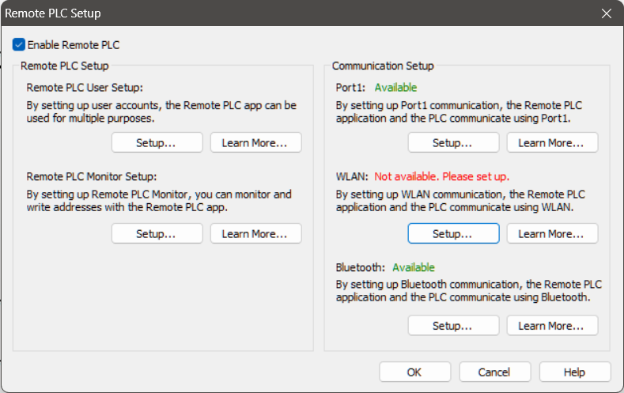

|
|
|
Topic: CL319 |
Remote PLC Setup |
|
|
The "CLICK Remote PLC" capability is new in Version 3.60 of the CLICK software and firmware. It enables a user to access data registers and PLC status information using a mobile phone or tablet running either iOS or Android. This enables the user to perform Machine troubleshooting and setup operations when access to the programming PC can be awkward or inconvenient.
CLICK Remote PLC app is not intended to replace an operator interface for standard machine operations; instead it provides an additional tool to simplify troubleshooting and configuration of your system.
|
|
Caution:Safety should always be a paramount consideration when using a Mobile App. Wireless communications like Wi-Fi and Bluetooth can be unreliable in industrial settings and should NEVER be used in lieu of a hardwired e-stop or safety system. As a general rule, wireless connections are not reliable enough for ongoing machine operation and should be used only when a hardwired connection is not possible. |
|
There are 4 steps required to configure the Remote PLC app within the CLICK Programming software.

Enable Remote PLC: This step tells the processor to open the internal communications channels to share data. It must be enabled to access the Remote PLC User Setup dialog and the Remote PLC Monitor Setup dialog.
Remote PLC Monitor Setup: Click Setup under the "Remote PLC Monitor Setup" section to open the Remote PLC Monitor Setup dialog and configure "Monitors" for the Remote PLC app. A Monitor behaves much like a typical Data View except a Monitor is limited to 10 addresses and can be configured as editable or read-only. The Monitor needs to include the addresses you wish to access in the Mobile App. You can create up to 32 Monitors.
Remote PLC User Setup: Up to 5 user accounts can be set up to access the Remote PLC. Click Setup to open the Remote PLC User Setup dialog and configure users. This is where you will grant access to each of the Monitor Views you have created.
Communication Setup: The Remote PLC App can connect to the CLICK PLC using any of 3 communication ports.
1) Port 1 – Ethernet. If your PLC is connected to a LAN that has Wi-Fi access (for example, via a router with Wi-Fi or a Wireless Access Point), then the PLC can communicate with the Remote PLC App over the Wi-Fi Ethernet connection. If Wi-Fi is not available or reliable, you can buy a Lightning/USB to Ethernet adapter to connect your mobile device to your network using a wired connection. A wired connection will provide the fastest and most stable method to connect the Remote PLC App to a CLICK PLC. Click Setup to configure the Ethernet port. Ensure your network settings are configured appropriately to allow the PLC to connect to your network and the phone or tablet is connected to the same network subnet.
2) WLAN. If you have a CLICK PLUS with Wi-Fi capabilities, you can configure the CPU to directly connect to your Wi-Fi network. If a Wi-Fi connection to your local network is active, then the PLC can communicate with the Remote PLC App across the network just as it would over a wired Ethernet connection. Click Setup to configure the Wi-Fi port. Ensure your network settings are configured appropriately to allow the PLC to connect to your network and the phone or tablet is connected to the same network subnet.
|
|
Note: The Remote PLC App does not connect directly to the PLC via Wi-Fi. The Remote PLC App uses a Wi-Fi connection from your mobile device to your local network, and the CLICK PLC is connected to the same local network over either wired Ethernet or Wi-Fi. |
|
3) Bluetooth. If you have a CLICK PLUS PLC with Bluetooth capabilities, you can enable the Bluetooth port and configure Bluetooth to act as the Remote PLC communications port. Click Setup to configure the Bluetooth port. Ensure you have Bluetooth enabled on your phone and on the PLC and the PLC will appear when you browse for active devices using Bluetooth.
CLICK Remote PLC can support up to 3 mobile devices via Wi-Fi, or 2 Wi-Fi and a single BLE connection simultaneously.
|
|
Note:Anytime there are changes to the Comms settings on the CLICK, either cycle power, or toggle the Run/Stop switch to apply those changes. This is done to prevent unintentional loss of communications when changes are downloaded with a project. |
|
After the Remote PLC feature is configured on the PLC, see Remote PLC App for information on installing and using the app.
Remote PLC User Setup
Remote PLC Monitor Setup
Com Port 1 (Ethernet) Setup
Wireless LAN Port Setup
Bluetooth Port Setup
Remote PLC App